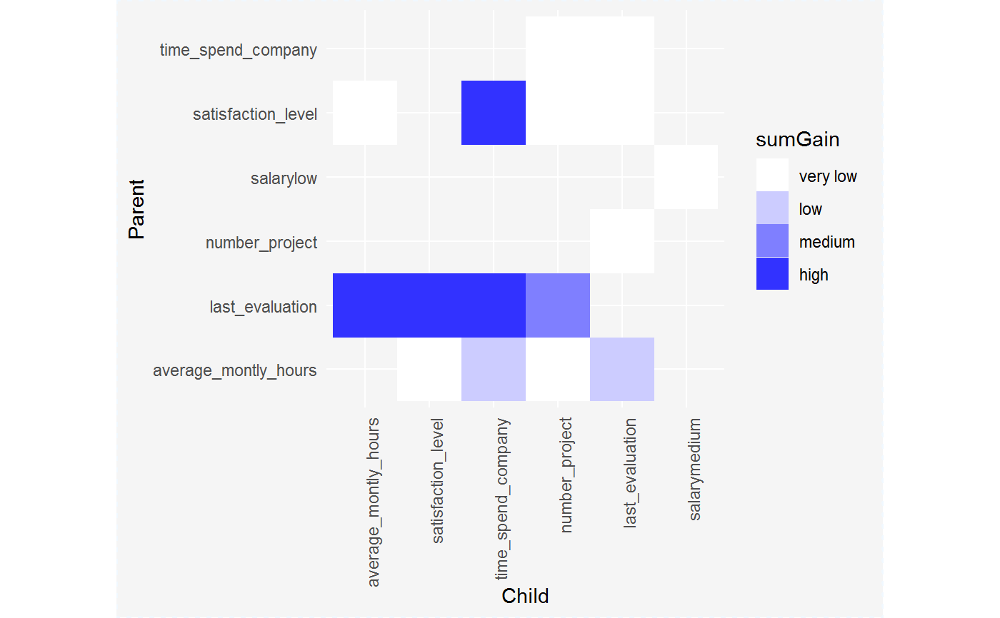

Interactions plot
Interactions Plot
# S3 method for interactionsTable plot(x, ...)
Arguments
| x | a result of `interactionsTable` function |
|---|---|
| ... | other parameters |
Value
a ggplot object
Details
NOTE: High gain of pair for option="pairs" can be a result of high gain of down variable (child).
As strong interactions should be considered only these pairs of variables,
where variable on the bottom (child) has higher gain than variable on the top (parent).
Examples
#' library("EIX") library("Matrix") library("data.table") library("xgboost") dt_HR <- data.table(HR_data) sm <- sparse.model.matrix(left ~ . - 1, data = dt_HR) param <- list(objective = "binary:logistic", base_score = 0.5, max_depth = 2) xgb.model <- xgboost( param = param, data = sm, label = dt_HR[, left] == 1, nrounds = 50, verbose = FALSE) inter <- interactionsTable(xgb.model, sm, option = "interactions")#> Error in eval(jsub, SDenv, parent.frame()): nie znaleziono obiektu 'N'inter#> Error in eval(expr, envir, enclos): nie znaleziono obiektu 'inter'plot(inter)#> Error in plot(inter): nie znaleziono obiektu 'inter'#> Parent Child sumGain frequency #> 1: satisfaction_level number_project 3573.869144 6 #> 2: satisfaction_level time_spend_company 3421.167360 5 #> 3: satisfaction_level satisfaction_level 1078.148027 10 #> 4: last_evaluation average_montly_hours 843.871933 4 #> 5: last_evaluation satisfaction_level 826.747929 6 #> 6: last_evaluation time_spend_company 651.903787 4 #> 7: time_spend_company time_spend_company 446.774613 3 #> 8: last_evaluation number_project 399.432385 3 #> 9: average_montly_hours satisfaction_level 346.017107 5 #> 10: average_montly_hours time_spend_company 334.233341 3 #> 11: average_montly_hours last_evaluation 312.108875 2 #> 12: average_montly_hours average_montly_hours 229.242886 6 #> 13: average_montly_hours number_project 188.761364 3 #> 14: satisfaction_level average_montly_hours 168.389938 1 #> 15: satisfaction_level last_evaluation 131.794312 1 #> 16: last_evaluation last_evaluation 125.887398 1 #> 17: Work_accident number_project 119.155579 1 #> 18: time_spend_company last_evaluation 112.065306 2 #> 19: salarylow time_spend_company 80.271004 1 #> 20: time_spend_company number_project 67.291985 3 #> 21: salarylow salarymedium 59.674580 2 #> 22: Work_accident time_spend_company 54.700199 1 #> 23: Work_accident satisfaction_level 39.800942 3 #> 24: number_project salarylow 28.924749 1 #> 25: number_project last_evaluation 19.029501 1 #> 26: time_spend_company satisfaction_level 16.250017 1 #> 27: salarylow Work_accident 11.632745 1 #> 28: Work_accident last_evaluation 6.214535 1 #> 29: number_project satisfaction_level 3.267537 2 #> Parent Child sumGain frequencyplot(inter)